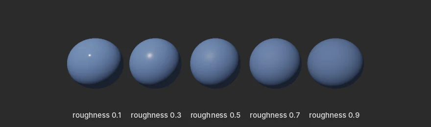

PBR
Theory#
Physically based rendering (PBR) is a family of techniques that model light in a way that is closer to physics than Phong or Blinn-Phong. The pay-off is practical:
- Materials look right under any lighting, without per-scene tweaking.
- Artists author materials with a few intuitive parameters that mean the same thing in every engine.
A lighting model is usually called physically based when it meets three conditions: it is built on a microfacet model of surfaces, it conserves energy, and it uses a physically based BRDF. This chapter explains each, and the next one turns them into shader code.
Microfacets#
At a microscopic scale no surface is smooth. It is made of tiny perfect mirrors called microfacets, each pointing in its own direction. On a rough surface their orientations vary wildly, and incoming light scatters widely, producing broad, dim highlights. On a smooth surface they are nearly aligned, and reflections are sharp and bright.
We cannot model individual microfacets, so we describe them statistically with one number, the roughness, from 0 (mirror) to 1 (completely rough). What matters to a highlight is the fraction of microfacets whose normal matches the halfway vector between the light and the viewer, the same vector we met in Blinn-Phong.
Energy conservation#
Outgoing light can never exceed incoming light, apart from surfaces that emit light themselves. When light hits a surface it splits into two parts:
- The reflected part bounces off the surface directly. This is specular light.
- The refracted part enters the material, scatters inside, and is partly absorbed. What comes back out, colored by the material, is diffuse light.
The two are mutually exclusive: light that was reflected cannot also be refracted. So if a fraction kS is reflected, at most 1 - kS is left for diffuse.
Metals behave differently from non-metals (dielectrics). A metal absorbs all refracted light, so it has no diffuse color at all, only tinted specular reflection. This is the basis of the metalness parameter.
The reflectance equation#
PBR is built on this equation:
Lo(p, wo) = ∫Ω fr(p, wi, wo) · Li(p, wi) · (n · wi) dwi
It reads more gently than it looks. The light Lo leaving point p toward the viewer wo is the sum, over every incoming direction wi in the hemisphere Ω above the surface, of:
Li, the radiance arriving from that direction, which is the strength and color of the light,n · wi, the familiar cosine factor that weakens light arriving at a shallow angle,fr, the BRDF, which says how much of the light fromwiis reflected towardwofor this material.
For a handful of point lights the integral collapses into a simple sum over the lights, which is what the next chapter does. For light arriving from the whole environment we have to actually solve it, and that is the subject of the IBL chapters.
The Cook-Torrance BRDF#
The BRDF used by practically every real-time renderer has a diffuse and a specular part:
fr = kD · f_lambert + f_cook-torrance
The diffuse part is the Lambertian term, a constant: albedo / π.
The specular part is
D · F · G
f_cook-torrance = ─────────────────
4 (wo · n)(wi · n)
with three functions, each approximating one aspect of microfacet behavior.
D: normal distribution function#
How many microfacets are aligned with the halfway vector h? The Trowbridge-Reitz GGX distribution, with α = roughness²:
α²
D = ─────────────────────────
π ((n · h)² (α² − 1) + 1)²
Low roughness concentrates the result into a small, intense spot. High roughness spreads it out.
G: geometry function#
Microfacets shadow and mask one another, especially on rough surfaces at grazing angles. The Schlick-GGX approximation for one direction is
n · v
G1(v) = ─────────────────
(n · v)(1 − k) + k
where k = (roughness + 1)² / 8 for direct lighting and k = roughness² / 2 for image-based lighting. Smith's method combines the view and light directions: G = G1(view) · G1(light).
F: Fresnel equation#
Every surface becomes more reflective at grazing angles. Look straight down at a lake and you see the bottom; look across it and you see the sky. The Fresnel-Schlick approximation:
F = F0 + (1 − F0)(1 − (h · v))⁵
F0 is the base reflectivity, the reflectance when looking straight at the surface. Dielectrics have a low, colorless F0 around 0.04. Metals have a high, colored one:
| Material | F0 (linear RGB) |
|---|---|
| Water | 0.02, 0.02, 0.02 |
| Plastic, glass | 0.04, 0.04, 0.04 |
| Iron | 0.56, 0.57, 0.58 |
| Copper | 0.95, 0.64, 0.54 |
| Gold | 1.00, 0.71, 0.29 |
| Aluminium | 0.91, 0.92, 0.92 |
In the metalness workflow, F0 is computed by blending between 0.04 and the albedo color using the metalness value.
The Fresnel term F is the reflected fraction kS. So kD = (1 − F)(1 − metalness).

Material parameters#
A PBR material in the common metallic-roughness workflow consists of:
| Map | Color space | Meaning |
|---|---|---|
| Albedo | sRGB | Base color, with no lighting or shadows baked in. For metals, the F0 color. |
| Normal | linear | Tangent-space normal, as in normal mapping. |
| Metallic | linear | 0 for dielectrics, 1 for metals. Rarely in between. |
| Roughness | linear | Microfacet roughness. |
| Ambient occlusion | linear | Pre-baked occlusion of crevices. |
This is the material model used by USD's preview surface and by glTF, so the assets Model I/O loads map directly onto it (.baseColor, .metallic, .roughness, .tangentSpaceNormal, .ambientOcclusion).
Because PBR depends on correct light intensities, it requires the linear workflow and HDR pipeline from the previous section. Check that both are in place before continuing.